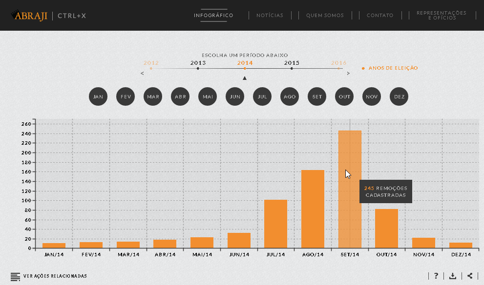
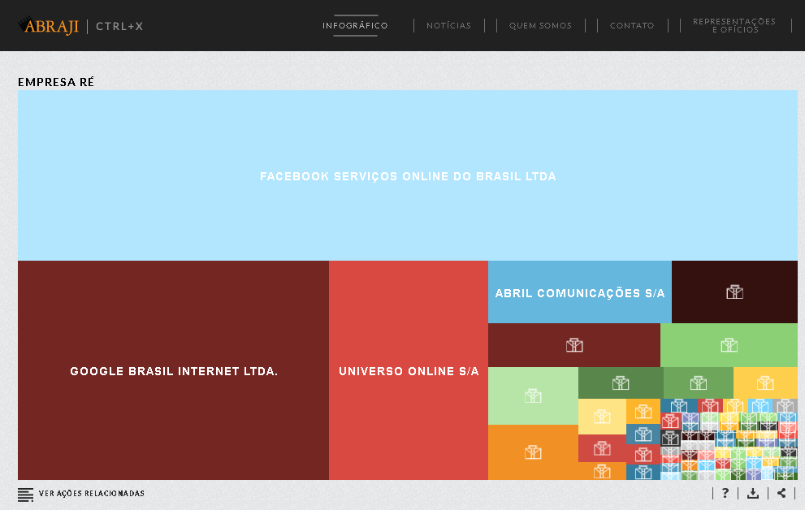
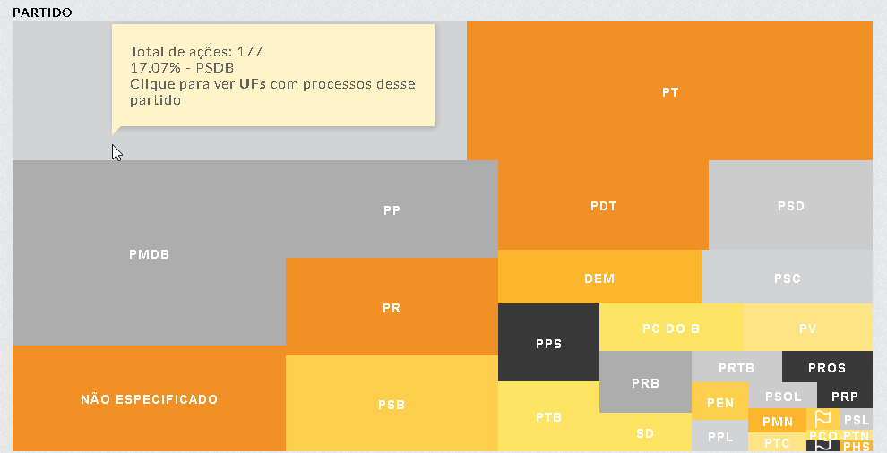

There are countless Brazilian journalists and media companies who are facing lawsuits because of what they have published online. Small media outlets, without the funds to fight back in court, are left with only one option: to remove their content from the web. The number of lawsuits is increasing, meaning that the threat to silence information in Brazil is increasing.
In the visualization below, you can see an increase in the number of lawsuits that were filed in the months leading to the 2014 election. See the Ctrl+X website for more interactive visualizations. 
We, at the Brazilian Association for Investigative Journalism (Abraji), are deeply concerned with the effects of these content removal requests. In our country, the main purpose of many lawsuits is to intimidate and control. Aware that one of the biggest source of lawsuits against online publications are the politicians who are campaigning for elections, in 2014 we launched a project with the intention of tracking and investigating these requests. The project was then called “Eleições Transparentes” (Transparency in Elections). During the 2014 electoral race, the project identified the politicians and the parties that most frequently filed suits against journalists and media outlets.
Eleições Transparentes found that there is no shortage of politicians requesting the censorship of journalists and media outlets alike. We have also started seeing the first instances where judges have accepted these requests. The most popular case was in 2009, when a court ordered that one of the biggest newspapers in Brazil, O Estado de S. Paulo, to cease publishing news about a political scandal involving Fernando Sarney, the son of a former president.
Visualization of media companies by the number of content removal lawsuits they have received.

Visualization of parties by the number of lawsuits they have filed.

In Abraji we believe that the best way to fight against this problem, which undermines the freedom of expression in our country, is to bring publicity to these lawsuits. Our goal is to make it easy to find information on content removal requests, facilitating research and allowing the public to keep themselves informed. This information includes the reason why the request was filed, who is behind it, and to what they are asking for. We gather this information directly from the law departments of the biggest media outlets in Brazil, and also by leaving an open channel for every independent journalist, blogger or citizen involved in one of these lawsuits. This encourages everyone to send us the details of their case and bring awareness to it.
We realized, though, that direct contact with journalists is not the only way to monitor Brazilian censorship. We would need more information to be more precise and more efficient. Since 2015 we have been updating the project, now called Ctrl+X, with new approaches to the problem. We discovered that it was very difficult to search through the court websites, and it is not possible to search through all of the different state court websites at once.
This is where ParseHub's help came in.
In preparation for the 2016 elections, we started to make regular queries to track the new lawsuits involving candidates. This proved to be too many queries for a team to enter manually. For each media company that we wanted to search for as a participant in the lawsuit (and there are many of them), its name had to be searched in 28 different electoral courts. For each court results, there are multiple ways (more than 50 different ways in some cases) that this media company's name could appear. We had to dig into each one of these options to find and read the lawsuits related to it. A very slow process that takes an enormous amount of time to do manually.
We created a ParseHub project that searches for all of these different terms in all the electoral courts at once. There are a lot of lawsuits that are returned in these queries, so we also created a filter that extracts only the lawsuits dated in 2016 (the previous ones we already did manually). As a result, we get a spreadsheet with the information to every lawsuit related to the project. Each time we run our ParseHub project, it searches through more than 20 thousand web pages and returns only the results that are relevant to our cause.

This has saved us tons of time, especially because we are making weekly scrapes. Now we can compare different scrapes to see only the new lawsuits of the last week. We can not thank ParseHub’s team enough for providing us with such a powerful tool and making it easier to monitor what the Brazilian politicians are trying to hide in the internet. So far, we managed to gather the information of more than 1.7 k lawsuits. With ParseHub’s help we are keeping an open eye on censorship, and have improved the precision of our project enormously.